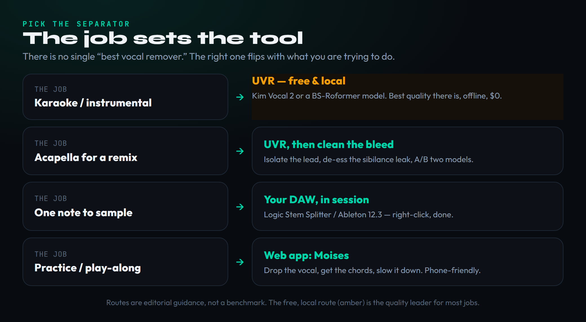
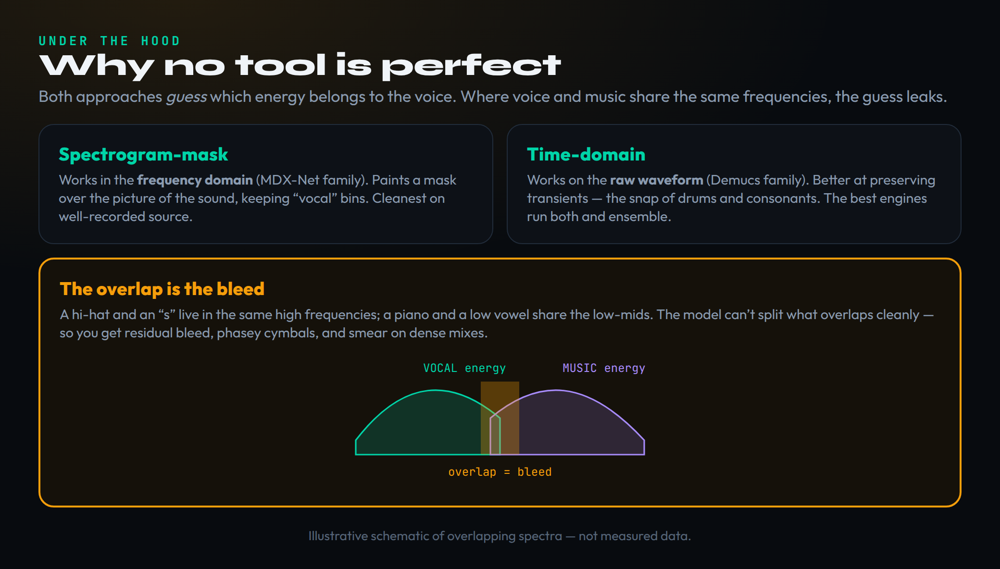
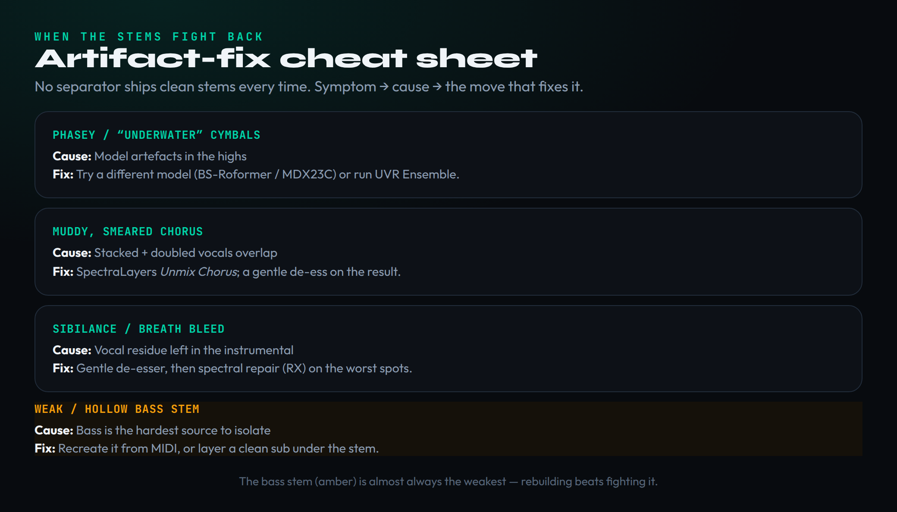

Type “remove vocals from a song” into a search bar and you will be handed a hundred pages that all say the same thing: upload your file to some website, click a button, download the result. It works, sort of, and it hides almost everything that actually matters. Because there is no single best vocal remover — there is the right separator for the job in front of you, and the quiet truth that the highest-quality option is free, runs on your own machine, and never sends your audio anywhere. Pulling a clean karaoke instrumental, lifting an acapella for a remix, grabbing one note to sample, or dropping the vocal so you can practise along are four different problems with four different best answers. This guide walks all of them. It also tells you the part the listicles leave out: no tool produces perfect stems, here is how to clean up the artifacts when they appear, and isolating a vocal does not give you the right to release it. The tool is half the work. Cleaning the bleed and respecting the rights is the other half.
There is no “best vocal remover” — the right tool depends on the job. For the cleanest result, the free, local app Ultimate Vocal Remover (UVR) running a modern model (Kim Vocal 2 or a BS-Roformer model) beats most paid websites and keeps your audio private. If you have a current DAW you may already own a separator: Logic’s Stem Splitter and Ableton 12.3 Suite’s Stem Separation both work in-session for free. Web tools like LALAL.AI and Moises are fastest and need no install. Whatever you use, expect some bleed — and remember that removing a vocal is a technical act, not a legal one: releasing a flip of someone’s record still needs clearance.
Two-stem, full separation, and why the job picks the tool
Before you touch any software, decide what you are actually making, because that single decision quietly determines which tool is correct. The umbrella term is stem separation — pulling a finished stereo mix apart into its component parts — and our guide to AI stem separation covers the underlying technology in depth. What concerns us here is the craft decision on top of it: a two-stem split gives you just vocals and instrumental, which is all you need for karaoke or a quick instrumental. A full multi-stem split gives you vocals, drums, bass and “other,” which is what you want when you intend to rebuild a track. Asking for more stems than the job needs is not free — every extra split is another chance for the model to smear something — so match the output to the goal.
Now map the job to the tool, because the answer genuinely flips. If you want a karaoke instrumental from a well-recorded pop record, the highest quality comes from the free local route, and you simply do not need to pay anyone. If you are lifting an acapella for a remix, you want the cleanest vocal a model can give and you accept that you will spend a few minutes cleaning the residue afterward. If you need one note or one phrase to sample — the building block of so much production, as our primer on what sampling is explains — the fastest path is often a right-click inside the DAW you already have open. And if you just want to practise or play along, drop the vocal and slow the track down in a phone app and you are done in seconds. One task, one tool; the mistake is owning a single favourite and forcing every job through it.
There is a second variable that matters as much as the tool, and it has nothing to do with software: the source recording itself. Separation quality is set in large part before you ever load a file, by how the track was made and mastered. A dynamic, well-recorded pop or acoustic record — clear vocal sitting in its own space, instruments that are not fighting for the same frequencies — comes apart cleanly because the model has obvious seams to cut along. A dense, brick-wall-loud master where everything has been compressed into a single wall of sound is hard mode: the sources are physically glued together in the audio, and no model can reliably separate what the mastering chain fused. The same is true of heavy reverb and effects, which the model often assigns to the wrong stem because the tail of a reverbed vocal genuinely is spread across the mix. Manage your expectations by the material in front of you, not by the tool’s marketing.
One more thing decided before you press go: feed the separator the best file you have. These models reconstruct what they think the original sources were, and they can only work with the information present in your input. Hand them a 128 kbps MP3 and you have already discarded high-frequency detail and added compression artifacts that the model will faithfully bake into every stem it produces. Start from the highest-quality source available — a WAV, FLAC, or at minimum a high-bitrate file — and you give the model a fighting chance. Garbage in is genuinely garbage out here, and no amount of post-processing recovers detail that was thrown away before the separation began.

The free local route: UVR and the model that matters
Here is the fact the affiliate listicles bury because it sells nothing: the best vocal separation available outside an enterprise pipeline is free, open-source, and runs entirely on your own computer. The application is Ultimate Vocal Remover — UVR — and it is a free download for Windows, macOS and Linux. It does not upload your audio anywhere, which matters both for privacy and for working with unreleased material, and it is not a stripped demo with a paid tier waiting to unlock the good models. It is the whole thing, for nothing.
What separates UVR from a one-click website is that you choose the model, and the model is where ninety percent of the quality lives. UVR is a front-end that runs different AI separation engines, and the right one depends on what you are extracting. For a clean instrumental or a karaoke split, the standouts in 2026 are the BS-Roformer family, a newer transformer architecture that took over the public separation leaderboards through 2025 and 2026, and MDX23C models for dense electronic and rock material. For isolating a lead vocal off a finished record with the fewest artifacts, Kim Vocal 2 is the long-standing favourite. And for a full four-stem split — vocals, drums, bass, other — the fine-tuned HTDemucs FT is the modern default. You do not need all of them; keep three or four on hand and reach for the one that suits the source.
The single technique that separates UVR experts from beginners is Ensemble Mode. Instead of trusting one model and living with its particular artifacts, UVR can run several models on the same file and blend their outputs, which averages out the weaknesses of any one engine and consistently produces a cleaner result than a single pass — at the cost of roughly doubled processing time. A common high-quality recipe is to ensemble a Roformer model with Kim Vocal 2. The honest trade-offs are real: UVR has a learning curve a website does not, it wants a decent GPU to run quickly (it works on a CPU, just slowly), and each model is a few hundred megabytes to download. But once it is set up, you have studio-grade separation that costs nothing and never leaves your desk. The leaderboard moves — the top model this quarter may be eclipsed next quarter — so when a result really matters, spend two minutes checking the UVR community for the current best model before you commit a session to it.
If you have never opened it, the first run is less intimidating than the model list suggests. You pick a process method (for most jobs, the MDX-Net or the demucs/Roformer family), choose your model from the dropdown, point it at your input file, and set the output folder. Two settings are worth understanding rather than leaving on default. The first is which stems you keep — UVR can save the vocal, the instrumental, or both, and for a karaoke instrumental you only want the instrumental, so there is no reason to write the vocal stem you will throw away. The second is the GPU conversion toggle: switch it on if you have a capable graphics card and separation runs many times faster, leave it off and the same job still completes on the CPU, just slowly. Run the file, listen critically to the result, and if the artifacts bother you, change one variable — usually the model — and run it again. That tight loop of model-swap-and-listen is the entire skill, and it is why the local route beats a one-click site: the site gives you one answer, UVR lets you audition several and keep the best.
The vocal remover you probably already own
Before you download or pay for anything, check whether the separator is already sitting inside your DAW, because in 2026 it very likely is. The major studios have folded AI separation directly into the session, turning what used to be an export-bounce-reimport chore into a right-click, and most producers have no idea the feature is there.
If you use Logic Pro, the built-in Stem Splitter separates any audio region into vocals, drums, bass and other in a few seconds, entirely free with the DAW and processed locally. If you use Ableton Live, version 12.3 added native Stem Separation — right-click a clip and choose “Separate Stems to New Audio Tracks,” pick your stems, and they land on colour-coded tracks ready to use. The one honest caveat worth stating loudly: Ableton’s native separation requires the Suite edition (or Push 3 Standalone); it is not in Standard, Intro or Lite, and if you are on those, the free local UVR route above is your equivalent. FL Studio has likewise added stem-separation tooling in recent versions, so it is worth checking your install before reaching elsewhere. When you do split in-session, always choose the higher-quality mode for anything you intend to keep — the fast mode exists for previews and the quality drop is audible on vocals.
There is also a professional tier that lives near the DAW rather than inside it: iZotope RX. Its Music Rebalance module separates a mix into vocals, drums, bass and other, and in the current RX 12 it runs as a real-time plugin with markedly improved separation quality. RX is not free — Music Rebalance ships in RX 12 Standard (around $399) and Advanced (around $1,399), not the entry-level Elements — and it is overkill if separation is all you want, but if you already own RX for cleanup work, you own a capable separator too. Our iZotope RX guide and the dedicated RX review walk through where it earns its price, and for the wider category our roundup of the best noise-reduction plugins puts it in context. The point of this whole section: do not pay a website for something a tool you already own does for free in the session.
The reason in-session separation is more than a convenience is that the stems land back in the same project, already aligned to the grid and the original timing. That means you can separate, treat one stem, and re-sum the parts without ever bouncing audio out and reimporting it — mute the extracted vocal and you have your instrumental, solo it and you have your acapella, or process the isolated drums and slot them straight back against the untouched bass. Because the split happens against the original file, the pieces phase-align when you recombine them, which is exactly what you want when you are rebuilding rather than just extracting. A website hands you a folder of disconnected WAVs and leaves the alignment to you; the DAW keeps everything in context. For one-note sampling and quick rebuilds especially, that in-context workflow is faster and cleaner than any round-trip through a browser, which is why checking your own DAW first is not just about saving money.
The fast web route, and when it earns its money
Sometimes you do not want to install anything, learn a model picker, or open a DAW — you want to drop a file in a browser and get stems back. That is what the web and app tools are for, and a handful are genuinely good. They trade the ultimate quality and privacy of the local route for speed and zero setup, which is exactly the right trade for a lot of everyday work.
LALAL.AI is the polished web standard. You get a free ten-minute trial to test it, then pay by the minute through credit packs or a subscription (plans start around $15, and pricing shifts, so check the current rates before buying). Its real differentiator is the breadth of stems: beyond the usual four, it can isolate piano, electric and acoustic guitar, synth, strings and wind — separations no other browser tool matches — using its newest Andromeda engine. Moises is the better pick for musicians rather than producers: a free tier covers five tracks a month, Premium runs about $3.99 a month and Pro about $9.99, and on top of separation it adds chord detection, pitch and tempo control, and native phone apps — ideal for practising, transcribing, or building backing tracks. RipX DAW is the outlier and the most interesting tool for working producers: a one-time purchase (roughly $60 to $160 depending on tier) that is the only consumer option letting you edit individual notes inside a separated stem, which is a genuine superpower for remixing and remastering. And SpectraLayers Pro 12 (around $300, with a cheaper Elements version) is the surgical, spectral-level unmixer — the tool you graduate to when you need to reach into the picture of the sound and fix one problem region by hand.
One honest warning about the free, no-account “vocal remover” sites that dominate the search results. Many of them run older, Spleeter-class models that are years behind the current state of the art, and the artifacts show it — watery instrumentals, obvious bleed, a hollow low end. They are fine for a throwaway karaoke track and a poor choice for anything you will release. If a result matters, the free local UVR route will almost always beat the free web tool; the paid web tools are worth their money for speed, convenience, and in LALAL’s case the exotic stem types you cannot get elsewhere.
So choose the web route deliberately, not by default. It is the right call in three situations and the wrong one outside them. It is right when a collaborator has no DAW and no patience for a model picker — you send them a link, they get stems, the session keeps moving. It is right when you are working from a phone and a native app like Moises is the only practical tool in your pocket. And it is right when you need a stem type the local route cannot give you — an isolated piano, a clean guitar, a string section — which is LALAL.AI’s genuine territory. Outside those cases, the local route usually wins on both quality and cost. The one caveat that overrides all of this is privacy: every web tool requires you to upload the audio, which is fine for a released commercial track and a real consideration for an unreleased demo, a client’s stems, or anything under NDA. When the material cannot leave your machine, the question of which web tool is best never arises — the local route is the only answer.
How separation actually works — and why nothing is perfect
You do not need a maths degree to use these tools, but one paragraph of understanding will save you hours of frustration, because it explains why every separator fails in the same predictable ways. There are two broad approaches under the hood. Spectrogram-mask models — the MDX-Net family — work in the frequency domain: they look at a picture of the sound (a spectrogram) and paint a mask over the regions they judge to be “vocal,” keeping those and discarding the rest. They are cleanest when the source is well recorded. Time-domain models — the Demucs family, originally from Meta’s research group — work directly on the raw waveform and tend to preserve transients better, the snap of a snare or the consonant at the front of a word. The best commercial engines are hybrids that route the audio through both and ensemble the results.

Here is the crucial consequence, and the reason “perfect” is the wrong expectation: every one of these models is guessing. It is making a trained, very good guess about which energy in the mix belongs to the voice and which belongs to everything else — but voice and instruments constantly share the same frequencies. A hi-hat and the “s” of a sung word live in the same high band; a piano chord and a low vowel share the low-mids. Where two sources overlap in frequency, the model cannot cleanly assign that energy to one or the other, so it leaks. That overlap is the artifact you hear: residual bleed of one stem into another, a phasey shimmer on cymbals, a smeared low-mid haze on a dense chorus. It is not a bug in a particular tool; it is the fundamental limit of pulling apart sounds that were summed together. Understanding that turns “why does this sound watery” from a mystery into a problem with known fixes — which is the next section. A spectrum analyser is genuinely useful here, because it lets you see the bleed as well as hear it.
This is also why the loudness of the master you start from quietly predicts how well it will separate, and it is worth one more sentence of mechanism. Modern mastering uses heavy limiting to make a track as loud as possible, and limiting works by pushing every source up against the same ceiling at the same time — the kick, the vocal, and the synth all get squeezed into the top of the available range together. To the model, that fused wall is genuinely harder to take apart than a dynamic mix where the sources still breathe independently, because the limiter has reduced the very differences in level and dynamics the model relies on to tell them apart. You cannot undo that on your end, but you can use it: when you have a choice of source, an earlier, less-aggressively-mastered version, a vinyl rip, or a streaming master mastered for loudness normalisation will often separate noticeably more cleanly than the loudest CD master of the same song.
Fixing the artifacts when they appear
Because no separator is perfect, the difference between an amateur result and a usable one is what you do after the split. Most artifacts have a known cause and a known fix, and none of them requires anything exotic. Treat the model’s output as a strong first draft, not a finished stem.

Start with the most common complaint: an instrumental that sounds phasey or “underwater,” usually worst on the cymbals and hi-hats. That is a high-frequency artifact of the particular model, and the first move is simply to try a different one — swap a Roformer model for an MDX23C, or run an ensemble — before you reach for any processing. A muddy, smeared chorus is almost always stacked and doubled vocals overlapping; SpectraLayers has an Unmix Chorus function built for exactly this, and a gentle de-esser on the result tames the harshness that survives. Sibilance or breath bleeding into the instrumental — vocal residue the model left behind — responds to a gentle de-esser followed by spectral repair (RX’s spectral tools are made for painting out the worst spots by hand). And then there is the one every producer eventually notices: the bass stem is almost always the weakest. Low frequencies are the hardest for these models to localise, so the isolated bass often arrives hollow or unstable. Rather than fight it, rebuild it: recreate the line from MIDI, or layer a clean sub underneath the extracted stem. The honest principle across all of this — the same one that governs good vocal mixing — is that the separator gets you most of the way, and a few minutes of corrective work gets you the rest.
The hardest job of all deserves its own warning, because it is the one that defeats beginners: splitting a lead vocal away from its backing vocals and harmonies. Standard separation pulls all the voices into one vocal stem — lead, doubles, harmonies, ad-libs and stacked choruses arrive fused together, because to the model they are all simply “vocal.” Pulling the lead out from under its own harmonies is a genuinely harder problem than separating voice from instruments, and most tools will not do it cleanly in one pass. The realistic approach is staged: separate the full vocal stem first, then run that vocal-only file through a tool built for the second split — SpectraLayers’ Unmix Chorus is designed precisely to pull a doubled or stacked vocal apart, and feeding it an already-isolated vocal rather than the full mix gives it the best possible chance. Even then, expect to do hand cleanup, and expect some material simply not to separate — a harmony sung in unison rhythm with the lead may be physically inseparable. Knowing this in advance saves you from blaming your tool for a limit that is built into the problem.
Two harder cases are worth naming because they come up constantly. Splitting lead from backing vocals is genuinely hard mode — they occupy nearly identical frequency space — and even the best models blur the line; SpectraLayers and the lead/backing modes in some tools do better than a generic split, but temper your expectations. And if you are pulling a vocal or a phrase to flip, the cleaner your separation, the less repair your remix or chopped sample needs downstream. Spend the effort at the separation stage and you spend far less fixing it later.
The legal line: isolating is not clearing
This is the part no tool tells you, and it is the part that can cost you, so read it before you release anything built from someone else’s record. Removing a vocal — or isolating one — is a purely technical act. It does not grant you any rights to the music you just pulled apart. The separation is yours; the song is not.
Where this matters is the gap between private use and public release. Making a karaoke instrumental of a track to sing over at home, or dropping the vocal to practise your guitar part, is personal use and nobody is going to chase you for it. The moment you release something — a remix, a flip, a sample-based track that uses audio you extracted — you step into licensing, and a recorded song carries two separate rights you have to deal with: the composition (the underlying song, controlled by the songwriters and publishers) and the master (that specific recording, usually controlled by a label). Isolating the audio touches neither. You still need permission for both, and “I made the instrumental myself” is not a defence — the instrumental is still derived from their recording.
The practical path depends on what you are doing. If you are releasing a remix, our guide on how to legally release a remix lays out the steps; if you are flipping a sample, start with how to clear a sample and the realistic budget in what it costs to clear a sample. This is precisely the kind of exposure our clearance work exists to handle — surfacing what needs licensing before it becomes a takedown or a lawsuit. The one-line version to remember: a clean separation is a great starting point and zero protection. The audio is easy now; the rights are the part that still takes work.
Put the whole framework into practice and it stops being abstract: pick the tool for the job, accept that the output is a draft, clean the predictable artifacts, and clear the rights before anything goes public. The three drills below take you through a karaoke pull, an acapella clean-up, and a full deconstruction — in order, each one harder than the last — so the decisions become reflexes.
Build the Skill: 3 Drills
Run these in order. The first proves the free local route beats the easy web tool; the second teaches you to clean a vocal; the third shows you where every tool fails so you know what to expect on a real job.
- Take a well-recorded, uncluttered pop track. Run it through a free no-account web vocal remover and save the instrumental.
- Install Ultimate Vocal Remover, download one current model (a BS-Roformer model or Kim Vocal 2), and separate the same track.
- A/B the two instrumentals on headphones. Listen specifically to the cymbals and the spots where the vocal used to sit — you should hear the local result is noticeably cleaner, and you will never trust the throwaway sites again.
- Isolate the lead vocal from a track using UVR (or your DAW’s separator), aiming for the cleanest vocal you can get.
- Listen for sibilance and instrumental bleed in the result, then tame it with a gentle de-esser and, if you have spectral tools, paint out the worst residue by hand.
- Now run the same source through a second model and compare. Notice how the right model choice does more for quality than any amount of post-processing — that is the lesson.
- Take a busy, layered chorus and do a full four-stem split. Then attempt to separate the lead vocal from the backing vocals.
- Solo each stem and write down exactly where each one failed — the phasey cymbals, the smeared low-mids, the hollow bass, the blurred lead/backing line.
- Rebuild the weakest stem (almost certainly the bass) from MIDI or a layered sub, and note which tool and model gave you the least to fix. You now know, from your own ears, what these tools can and cannot do.
Frequently Asked Questions
For most people it is Ultimate Vocal Remover (UVR) — a free, open-source app that runs on your own machine and, with a current model like a BS-Roformer model or Kim Vocal 2, produces cleaner results than most paid websites while keeping your audio private. The trade-off is a learning curve and a preference for a decent GPU. Free no-account web tools are faster but usually run older models with more artifacts.
Quite possibly. Logic Pro’s Stem Splitter and Ableton Live 12.3 Suite’s Stem Separation both separate a mix into vocals, drums, bass and other in-session, for free, processed locally — though Ableton’s requires the Suite edition (or Push 3). FL Studio has added stem tooling too. iZotope RX’s Music Rebalance also separates, if you own RX. Check your DAW before paying a website.
Because the model is guessing which frequencies belong to the vocal and which belong to the music, and where the two overlap it cannot split them cleanly — that leakage is the artifact. It is worst on cymbals and dense, layered sections. The first fix is to try a different model or run an ensemble before reaching for any processing; it is a model problem more often than a settings problem.
It is possible but it is the hardest separation there is, because lead and backing vocals occupy almost identical frequency space. Generic splits blur the line badly. SpectraLayers’ Unmix Chorus and the dedicated lead/backing modes in some tools do better than a standard split, but temper your expectations — a perfectly clean lead-versus-backing separation from a stereo mix is not realistic with current technology.
Removing or isolating a vocal is a technical act and grants you no rights to the music. Personal use — karaoke at home, practising along — is fine. But releasing a remix, flip or sample-based track built from someone’s recording requires clearing two separate rights: the composition (the song) and the master (that recording). “I made the instrumental myself” is not a defence, because it is still derived from their record. See our guides on clearing samples and legally releasing remixes.
A two-stem split gives you just vocals and instrumental — all you need for karaoke or a quick instrumental. A full multi-stem split gives you vocals, drums, bass and “other,” which you want when you intend to rebuild or remix the track. Ask only for the stems the job needs: every extra split is another chance for the model to introduce artifacts, so more stems is not automatically better.
Low frequencies are the hardest for separation models to localise, so the isolated bass often comes back hollow, unstable or smeared. It is the most consistent weak point across every tool. The practical answer is to rebuild rather than fight it: recreate the bass line from MIDI, or layer a clean sub underneath the extracted stem to give it weight and stability.
No, and you should not rely on it for that. Audio watermarks used by some AI music tools are designed to survive ordinary processing, including separation, and stem separation does not reliably remove them. Beyond the technical point, attempting to launder a track’s origin raises its own rights and disclosure problems. Treat separation as a creative and practical tool, not a way to erase provenance.